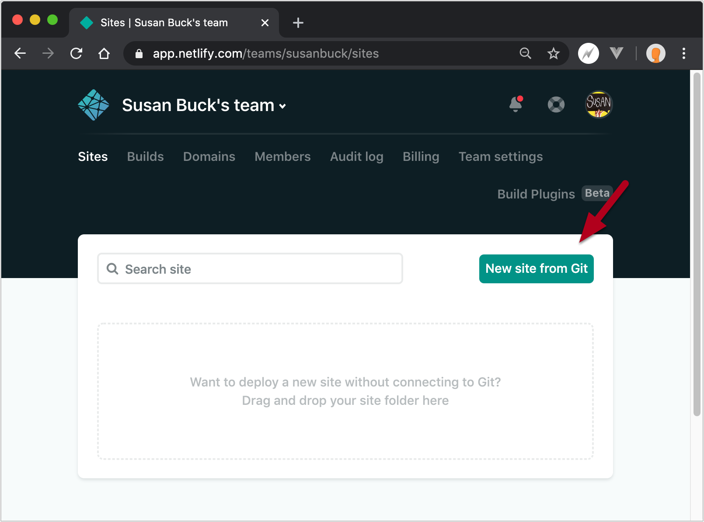
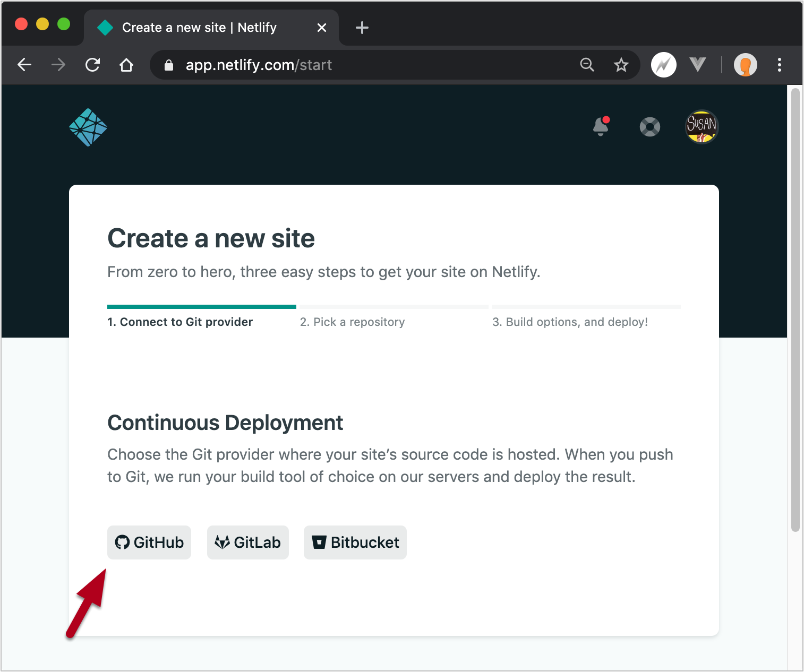
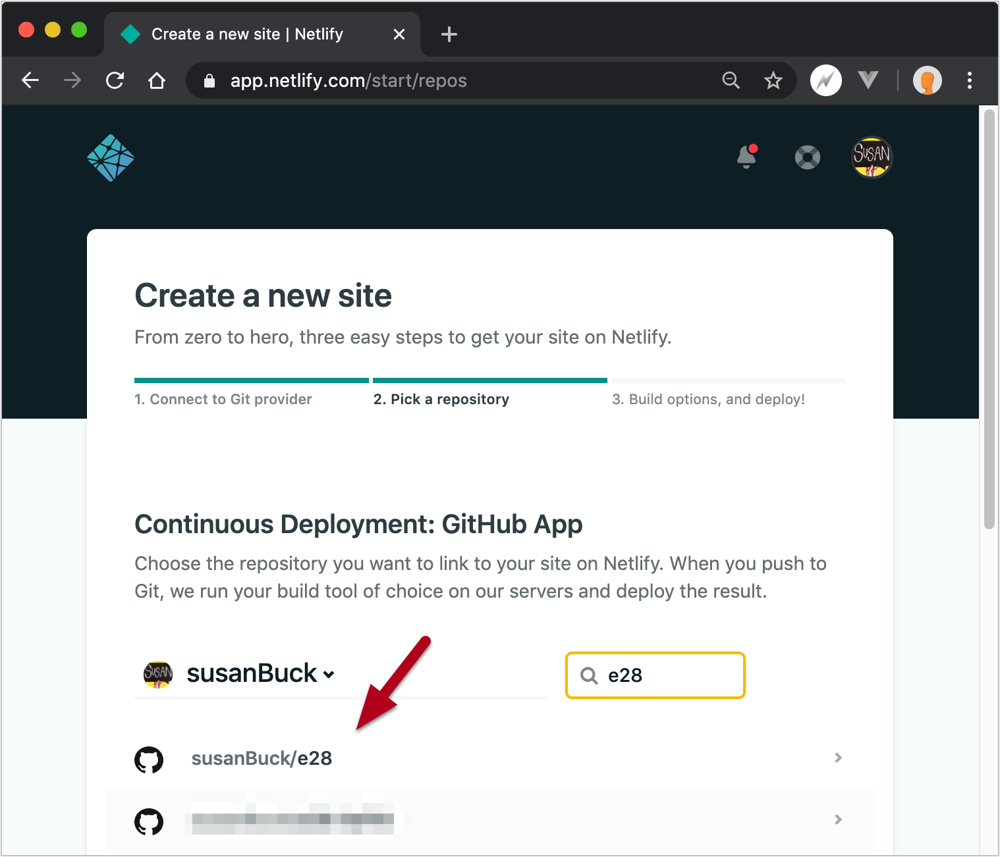
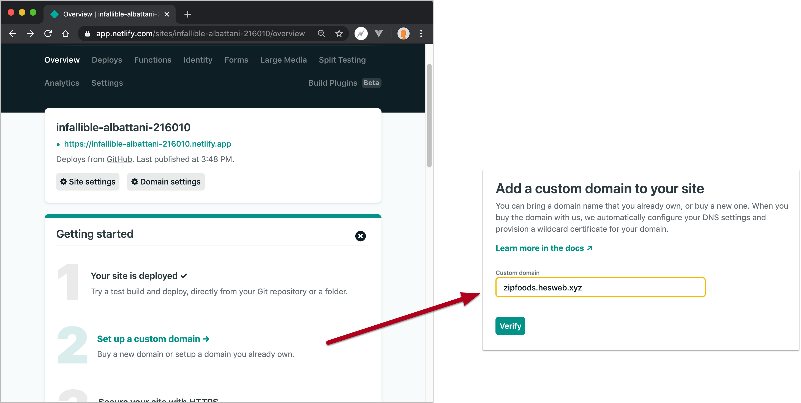
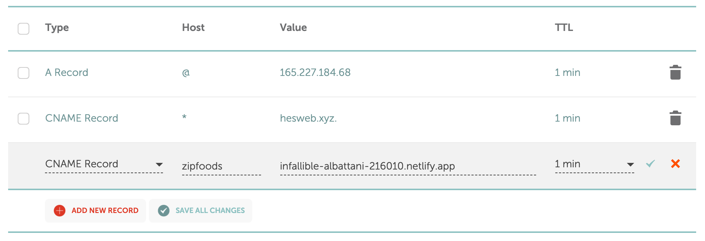

Static hosting
So far, we’ve been running our Vue.js web applications on an Apache server, which is a common approach to serving web applications.
This is an approach you will continue to use in many situations, especially when dealing with legacy projects.
As we transition to applications that are increasingly powered by JavaScript, however, the role of the server changes. We no longer need a server to process our content - instead, the server just needs to deliver static files of HTML, CSS, and JavaScript, and the subsequent processing is handled in the browser.
Of course, we still still need servers to do things like interacting with a database, but that work can be delegated to an API that our static websites make requests to.
In response to this shift toward static websites, hosting companies like Netlify have become very popular.
“Netlify is a web developer platform that multiplies productivity. By unifying the elements of the modern decoupled web, from local development to advanced edge logic, Netlify enables a 10x faster path to much more performant, secure, and scalable websites and apps. Our bet on the JAMstack is quickly coming true. The web is rapidly changing away from monolithic to decoupled apps, and web developers are storming ahead with more power than ever. Netlify is built to cater to that movement, and in just a few years we’ve on-boarded more than half a million businesses and developers, and are building and serving millions of web projects daily around the globe.”
Let’s look at deploying our ZipFoods project on Netlify so we can compare/contrast the experience to developing on a traditional server.
Configuration for Netlify + Vue Router
Before we deploy to Netlify, we need to set up a config file that will be used by Netlify to work with our Vue Router system.
To do this, create a new file in your project at /public/_redirects with the
following code:
# Netlify settings for single-page application
/* /index.html 200
This config file will make it so that all URLs/routes are processed via index.html,
and it’s
similar to the .htaccess Apache config file we set up on
DigitalOcean.
After making the above change, stage, commit, and push any changes to your project, then proceed to the next steps to setup Netlify...
Setup
To get started, sign up for a free Netlify account using your Github account at https://app.netlify.com/signup.
Once you’re in, find the option to create a New site from Git:
Then, choose Github: 
Then, find your e28 repository:
On the next page, Deploy settings, you can leave Build command blank as we are building our projects locally before deploying.
If you are building on production, you would want to add a build command such as:
cd zipfoods && npm install && npm run build
For Publish directory enter this path:
zipfoods/dist
Finally, click Deploy site.
Once your site is deployed, it should be accessible via a random subdomain assigned on the Netlify
servers, e.g. https://infallible-albattani-216010.netlify.app/.
Domains
Next, let’s make it so you can access your Netlify-hosted site via the domain you’ve been using for projects in this course.
First, you’ll set the domain in Netlify: 
Then you’ll set up a new CNAME record with your DNS provider that points to your Netlify address: 
After making the above changes, you should be able to access your site on Netlify via
http://zipfoods.yourdomain.com. If it doesn’t work right away, you may have to give it
some
time as the DNS changes propagate.
Auto-Deployments
Moving forward, whenever you push changes to your e28 repository on Github, Netlify will be notified of these changes and re-deploy your web application by pulling down the latest changes.
Compare & Contrast
The following notes were adapted from this article: The JAMstack: It’s Pretty Sweet
Traditional server workflow
- Coupled building and hosting
- When a user requests a page, the file is processed and served after interactions between a database, backend code, server, caching, and browser
Static hosting workflow
- Decoupled building and hosting
- When a user requests a page the file is already compiled and gets served to the browser from a CDN
Benefits of a static hosting workflow:
- Improved scaling: Static content can be placed on a CDN making it easier to dynamically scale.
- Heightened security: The lack of databases, plugins, and dynamic software running on a server decreases the potential for code injections and breaches. Additionally, since APIs handle dynamic functions, the web developer can leverage third parties’ security expertise.
- Accelerated load times: The JAMstack is faster because the browser processes functionality that the back-end traditionally executed. Prebuilt HTML files can be served over a CDN instead of rendering documents live on the server. Additionally, the JAMstack minimizes database queries, accelerating content delivery. During an experiment Smashing Magazine found that using a static version distributed via a CDN loaded the first byte six times faster than a dynamic website.
- Better developer experience: Loose coupling and separation of controls allow for more targeted development and debugging. The ability to leverage third party APIs means developers can focus on value-added features. Additionally, using a Git repository allows the entire website to be centrally hosted. In turn, developers can easily make changes by pushing a commit to the version-controlled repository. The JAMstack applies CI/CD to expedite development.